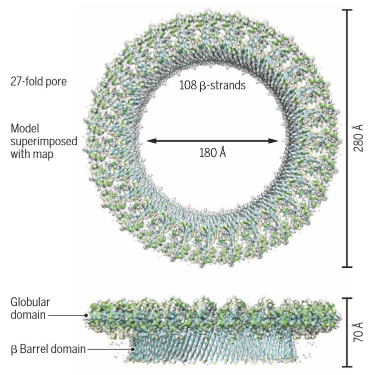
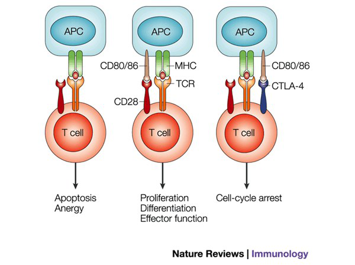
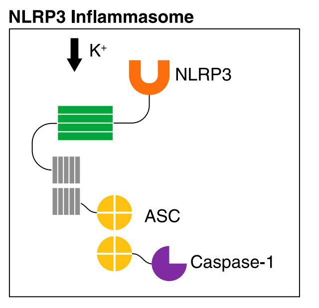
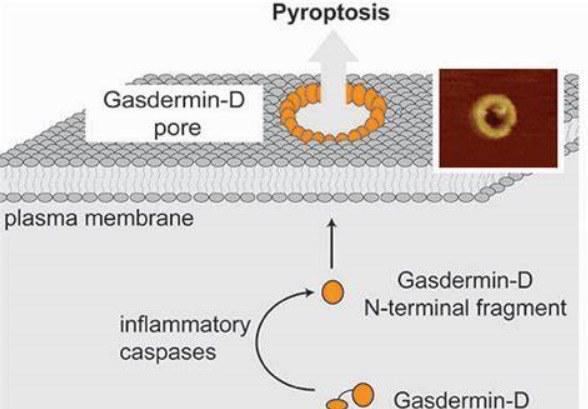

Medical Immunology · Zhejiang University School of MedicineLectures 3 and 4
Talking Between Cells
CD molecules, MHC, cytokines, pattern-recognition receptors and the inflammasome, read as one conversation.
Nothing commits on one signal.
This is the observation that ties Lecture 3 to Lecture 4. A T cell and a macrophage face the same risk: acting on a single, possibly mistaken, signal. Both solve it the same way.

The gasdermin D pore. A ring of 108 β-strands, 180 Å across. It is the door IL-1β leaves by, and it opens only after two signals. See page 4.
SIGNAL 1Is it there?
SIGNAL 2Is it dangerous?
SIGNAL 3What kind of response?
In a T cell
TCR sees peptide on MHC
CD28 meets B7 on an activated APC
Cytokines steer it to Th1, Th2, Th17 or Treg
In a macrophage
A PRR sees a PAMP, NF-κB writes pro-IL-1β
ATP, a crystal or a toxin assembles NLRP3
IL-1β and IL-18 recruit and instruct the neighbours
One alone
T cell: anergy, permanently switched off. Macrophage: primed, releases nothing.
Not needed to commit, only to steer
p. 2The three signals: how a T cell is switched on
p. 3MHC: the display case, hot dog and pita
p. 4The inflammasome: two signals, again
p. 5Tell them apart, and test yourself
Synthesized from lectures by Francis Kaming Chan, PhD, Liangzhu Laboratory · Created by Amirhossein DehghanDesign demo, 5 pages
A T cell needs a key, a pedal and a wheel.
Meeting its antigen does not decide what a T cell does. A second molecule on the other cell decides whether it responds, does nothing, or is disabled for good.
Anergy
Signal 1 without signal 2. The cell survives but is functionally inactivated, unresponsive to that antigen even if it is later presented with full costimulation.
Resting tissue cells show self-peptides all day and carry no B7. A self-reactive T cell that escaped the thymus is silenced by that meeting, not activated by it. The two-signal rule is peripheral tolerance.

Same APC, three outcomes. TCR only: anergy. Plus CD28: proliferation. Plus CTLA-4: cell-cycle arrest.
CD28 and CTLA-4: same ligand, opposite job
CD28the accelerator
CTLA-4 (CD152)the brake
Present
Constitutive, already on the resting T cell
Induced, only after TCR stimulation
Binds B7
Lower affinity
Much higher affinity, outcompetes CD28
Effect
Proliferation, differentiation, IL-2
Cell-cycle arrest, reduced IL-2
If lost
No costimulation
Mice die of lymphoproliferation within 3-4 weeks
Logic
Switching a T cell on also switches on the molecule that will switch it off. The response is built to end.
The TCR signal runs Lck → ZAP-70 → PLCγ1 → calcineurin → NFAT → IL-2 gene. Ciclosporin and tacrolimus block calcineurin, which is how graft rejection is prevented.
Releasing the brake on purpose
Ipilimumab, an anti-CTLA-4 antibody, lets T cells attack melanoma; James P. Allison shared the 2018 Nobel Prize for the idea. Its side effects (colitis, thyroiditis, hepatitis, dermatitis) are the proof: you have removed peripheral tolerance from the whole body, not only from the tumour.
Part 2 · The three signals2
Class I is a hot dog. Class II is a pita.
An MHC molecule is a display case. Ask where its peptide came from, and the class, the co-receptor and the T cell that reads it all follow.
MHC class IHLA-A, -B, -C
8-10amino acids. Bun closed at both ends, so the sausage is cut to fit.
Cleft walls
α1 + α2, one chain
Peptide from
Inside the cell: cytosolic proteins cut by the proteasome, pumped into the ER by TAP
Found on
Every nucleated cell. The message: here is what I am making
Read by
CD8 cytotoxic T cells; CD8 grips α3
MHC class IIHLA-DR, -DQ, -DP
13-25amino acids. Open at both ends, so the filling hangs out.
Cleft walls
α1 + β1, two chains
Peptide from
Outside: endocytosed proteins chewed by cathepsins in the acidified endosome
Found on
B cells, dendritic cells, macrophages. The message: here is what I found
Read by
CD4 helper T cells; CD4 grips β2
Inside, eight. Outside, four.
Class I shows what is made inside the cell, to CD8. Class II shows what came from outside, to CD4. The shapes are not arbitrary: the proteasome supplies size-matched peptides, so a closed pocket works; cathepsins leave ragged lengths, so only an open groove can hold them.
The rule of eight
CD8 × class I = 8
CD4 × class II = 8
Two arithmetic facts rebuild the whole table.
HLA alleles you may be asked to test for
HLA-B27Ankylosing spondylitis, reactive arthritis, anterior uveitis. A risk allele, not a diagnosis
HLA-B*57:01Abacavir hypersensitivity. Testing before prescribing is mandatory in HIV care
HLA-DQ2 / DQ8Coeliac disease. Their absence essentially rules it out
HLA-B*15:02Carbamazepine-induced Stevens-Johnson syndrome in Han Chinese
HLA-DR3 / DR4Type 1 diabetes
HLA-DR15Multiple sclerosis
Exam trap. β2-microglobulin is not an MHC gene. It sits on chromosome 15, is invariant, and never causes transplant mismatch.
Part 3 · MHC and HLA, the display case3
The inflammasome: two signals, again.
IL-1β can cause fever and shock. It has no signal peptide and is made inactive, so a macrophage must hear two independent signals before it can release a single molecule.
Three parts, three jobs
Sensor
NLRP3
LRRNACHTPYD
Adaptor, a pure connector
ASC
PYDCARD
Executioner
pro-caspase-1
CARDp20p10

Seen down a microscope as one large perinuclear ASC speck per cell, the readout that it has fired.
NLRP3 does not bind its activators. It detects a state they all cause, mostly potassium loss. It is a sensor of cellular distress, which is why it shows up in gout, atherosclerosis and type 2 diabetes.
How IL-1β actually leaves: gasdermin D

Caspase-1, 4, 5 or 11 cuts GSDMD, freeing its N-terminal fragment. Apoptotic caspases cannot.
The fragments form a 27-fold ring pore in the plasma membrane, about 180 Å wide.
Mature IL-1β and IL-18 pass out through it.
Enough pores and the cell bursts: pyroptosis, loud where apoptosis is silent.
The parallel to say out loud
T cell (Part 2)
Macrophage (Part 7)
SIGNAL 1
TCR sees peptide on MHC. Specific
PRR sees a PAMP. Specific
SIGNAL 2
CD28 sees B7. Permission
ATP, crystal or toxin. Permission
One alone
Anergy
A primed cell that releases nothing
Part 7 · The inflammasome4
Tell them apart, then test yourself.
Most lost marks come from look-alikes. Each pair below is separated by one fact.
CD28versusCTLA-4
Same ligand, B7. CD28 is constitutive and stimulatory; CTLA-4 is induced, higher-affinity and inhibitory
MHC IversusMHC II
Inside, eight; outside, four. CD8 × I = CD4 × II = 8
β2-microglobulinversusclass II β chain
β2m is on chromosome 15 and invariant. The class II β chain is an MHC gene and polymorphic
γcversusJAK3
The receptor chain versus the kinase it carries. Either loss gives SCID, but γc is X-linked and JAK3 autosomal recessive
PAMPversusDAMP
Microbial molecule versus host molecule in the wrong place. Same receptors, same cytokines
MyD88versusTRIF
MyD88 serves every TLR except TLR3. TLR3 uses TRIF
Caspase-1versuscaspase-3
Inflammatory, cuts IL-1β and GSDMD, versus apoptotic. Same family, opposite meaning
Apoptosisversuspyroptosis
Membrane intact and silent, versus membrane ruptured by GSDMD pores and maximally inflammatory
Self-test
Answer out loud before reading on. An answer you can recognise but not produce is not learned.
Q7
A T cell meets its antigen on a resting tissue cell. What happens, and why is that useful?
It receives signal 1 without signal 2 and becomes anergic, permanently unresponsive to that antigen. Resting cells carry no B7, so a self-reactive T cell is silenced by meeting its self-antigen. The two-signal rule is peripheral tolerance.
Q12
Why can class II hold a peptide of 20 residues when class I cannot?
The class I cleft is closed at both ends and grips the peptide's termini, so only 8-10 residues fit. The class II cleft is open and grips the middle. The proteasome cuts to a standard size; cathepsins do not.
Q28
Why does IL-1β need the inflammasome when TNF does not?
IL-1β has no signal peptide and is made as an inactive 31 kDa pro-form. Signal 1 writes the pro-form and stops. Signal 2 assembles the inflammasome, caspase-1 cuts it to 17 kDa and opens the GSDMD pore. TNF has a signal peptide and needs none of this.
Three sentences carry both lectures.
A CD molecule is half of a pair. Name the partner and the cell it sits on, and you have named the fact.
An MHC molecule is a display case. Ask where the peptide came from, and the class, co-receptor and T cell follow.
A cytokine is an instruction, and no cell obeys it until a second, independent signal confirms the danger is real.